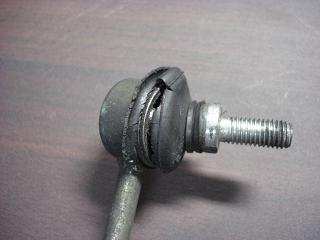
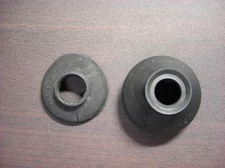
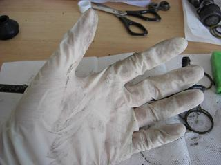
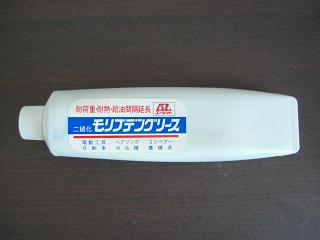
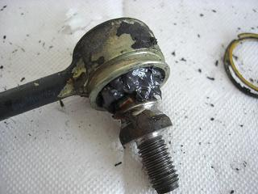
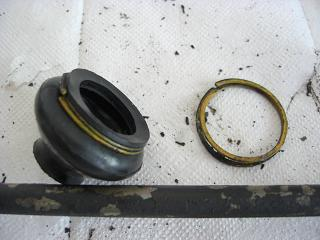
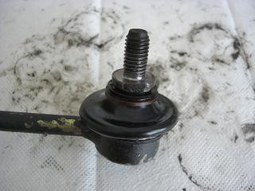
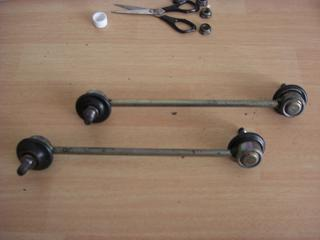

 上の画像は、1年ぐらい装着したサードパティー品のスタビリンクです。 サーキットを走る訳でもなく、街乗りだけでこの状況＾＾； 半年持たずでブーツが裂けてきて。。 ちょっと放置プレイしてるうちにグリスが無くなってガタが。。 さすがに半年ごとにリンクを交換する訳にもいかないので。。 このリンクに適合しそうなブーツを探した。
|
 左がサードパティー品ブーツの残骸 右が今回入手したブーツ（made in japanの文字が頼もしい） いろいろ調べていくと、 トヨタのAE10系トレノのタイロッドエンドに使用されているサイズに近いことが判明＾＾ トヨタ純正品番「45046-19175」 ここまで分かればあとは入手するだけ。きっと1000円あればおつりが来るだろう。 ってことで見積りを取ると・・・ 1個1750円（笑 1750円×4で7000円？ たかがゴムで・・・＾＾； そこでOEM品を探すことに。 すると、大野ゴムの「DC-2103」が「45046-19175」の互換品として出ていた。 その価格 １個210円（嬉 早速、4個購入した。
|
 このブーツは、上下でリング状の針金とゴムで固定されているので、 グリスを封入してブーツをはめていくとグリスが手に付いてベトベトになる＾＾； そこで、使い捨てのゴム手袋をはめて作業した。
|
 このグリスを封入した。 （これでいいのかなぁ？＾＾；） ロアアームを使いまわしで交換した時のあまり物
|
 サードパティー品は、ピロ部分にガタが出ていたので。。 最初に取り外した純正品を再利用 グリスの量？適当です（笑
|
 ブーツの下は、形状記憶の針金？のような物で固定されている。 新品ブーツに傷つけないように注意しながら作業した。 ブーツを付けた状態でこれをはめるのが難しい。。
|
 ブーツの上は、固い輪ゴム？のようなもので固定されている。 これは、伸びるので簡単に固定できる。
|
 交換後の図 あとは、このブーツの耐久性が気になるところ。 近いうちに装着してみようと思う。 ネット通販だとAutopartsagencyで購入できる＾＾（Ｍゴローと利害関係はありません） |